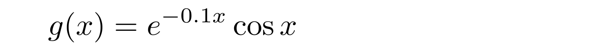

Derivera funktioner
medel, plottning, trigonometriska funktioner, exponentialfunktion, derivator- 1. Vi undersöker en funktion
- 2. Plotta funktionen
- 3. Derivera numeriskt
- 4. Testa några möjliga derivator
- 5. Gör en mer generell funktion för numerisk derivering
- 6. Använd anonyma funktioner för att förenkla ditt program
- 7. Plotta fler funktioner enkelt
I denna uppgift kommer du att träna mer på funktioner, och du får se hur man kan beräkna en derivata numeriskt med hjälp av Python. Du kommer även att få se hur man kan använda några finesser i Python, som anonyma funktioner och funktionsparametrar, för att enkelt plotta funktioner.
Koden i denna uppgift är provkörd på http://repl.it/languages/python3 (Python 3).
1. Vi undersöker en funktion
Vi ska undersöka följande funktion:

Uppdrag: Skapa ett Python-program med funktionen g enligt ovan, definierad som en (vanlig) Python-funktion. Lägg till en utskrift i ditt program, så att funktionens värde för x = 2, dvs g(2), skrivs ut.
Resultatet som skrivs ut ska vara ungefär -0.34.
Tips
import math def g(x): return # ... ... print(g(2))
2. Plotta funktionen
Att skriva ut ett enda funktionsvärde, som ovan, säger oss inte speciellt mycket om hur funktionen ser ut. En graf vore mycket bättre. Vi vill istället plotta funktionen för x-värden från 0 till 10.
Använd samma teknik för plottningen som du prövat i uppgiften “Plotta funktioner”. Använd gärna den funktion fplot som finns där. Om du gjort en egen variant (exempelvis för att sätta etiketter på funktionerna) går det att använda den också.
Uppdrag: Modifiera ditt program så att funktionen g(x) plottas för x-värden i intervallet 0 <= x <= 10. Glöm inte spara grafen i en fil, så att du kan se den.
3. Derivera numeriskt
Vi intresserar oss nu för funktionens derivata, g’(x). Det är fullt möjligt att derivera funktionen symboliskt (med hjälp av deriveringsreglerna). Här ska vi emellertid plotta g’(x) på ett annat sätt, nämligen genom att låta datorn beräkna derivatans värde för varje x-värde.
För detta använder vi derivatans definition:

Ofta ser man detta samband som ett gränsvärde, där man tänker sig h gå mot 0 (noll). Här ska vi istället använda sambandet som utgångspunkt för att beräkna derivatan av en funktion f för x-värdet x. Vi kommer därför att välja ett “lagom” litet h-värde. Du kommer strax att få se hur det går till.
Uppdrag: Inför en Python-funktion gderiv i ditt program. Dess resultat är funktionen g:s derivata för värdet x. Använd derivatans definition (ovan) för beräkningen.
Din Python-kod kan se ut i stil med följande:
def gderiv(x):
h = 0.00001
return # ... fyll i derivataberäkning här
Uppdrag: Ändra ditt program så att g och gderiv plottas i samma bild.
Tips
Du behöver två fplot-rader: en för g och ett för gderiv.
Den första funktionen ritas i blått, den andra i orange.
Uppdrag: Är derivatan rimlig?
Tips
När g har ett lokalt minimum ska derivatan vara noll.
När g pekar som brantast uppåt ska derivatan ha ett lokalt maximum.
4. Testa några möjliga derivator
Som vi redan nämnt kan man även derivera g symboliskt, det vill säga med hjälp av deriveringsreglerna.
De tre vännerna Bent, Alva och Kit har försökt göra detta, men det är länge sedan de gick i gymnasiet, och endast ett vagt minne av deriveringsreglerna återstår. De kommer fram till olika svar:
Uppdrag: Använd Python för att ta reda på vilken av derivatorna s1, s2 och s3 som bäst stämmer överens med den beräknade (gderiv). Vem av de tre kan sina deriveringsregler bäst?
Du ska alltså inte använda dina egna kunskaper om deriveringsreglerna i denna uppgift.
Tips
Du kan förslagsvis införa en funktion som följer:
def diff1(x): return gderiv(x) - s1(x)Plotta funktionen. Den visar hur mycket
gderiv och s1 skiljer sig åt. Om de är helt lika blir skillnaden 0, och då ska grafen för diff1 ju bli en horisontell, rät linje. (I praktiken blir värdena inte exakt 0, men mycket små, när derivatan är korrekt.)
5. Gör en mer generell funktion för numerisk derivering
Titta på din funktion gderiv igen. Den är specifikt gjord för att beräkna ett derivatavärde för g: om du vill derivera en annan funktion på samma sätt behöver du göra en ny variant på gderiv. Det är opraktiskt i längden.
Istället ska vi nu göra en generell funktion, som kan få heta deriv. Den funktionen ska ta två parametrar, en funktion f att derivataberäkna, samt (som tidigare) ett x-värde. Derivatan av f beräknas som tidigare, men f är alltså nu en parameter.
Idén är att du nu ska kunna skriva gderiv enklare. Och nästa gång du behöver beräkna ett derivatavärde för en funktion kan du också, på motsvarande sätt, göra det rätt enkelt.
def deriv(f, x):
h = 0.00001
return ... # derivatan av f
# derivatan av g, som nu kan skrivas enklare
def gderiv(x):
return deriv(g, x)
Uppdrag: Skriv färdigt funktionen deriv enligt ovan. Skriv om gderiv så att den använder deriv, också enligt ovan. Plotta g tillsammans med sin derivata. Ser derivataberäkningen ut att fungera?
6. Använd anonyma funktioner för att förenkla ditt program
I uppgiften “Plotta funktioner” prövade du att använda anonyma funktioner (lambdas). Gå gärna tillbaka till den uppgiften om du behöver repetera hur de fungerar.
Med hjälp av en sådan anonym funktion kan man helt låta bli definiera gderiv enligt ovan. Det räcker med g och deriv.
Uppdrag: Förenkla ditt program så att g och dess derivata plottas, men istället för att plotta gderiv använder du en kombination av en anonym funktion, deriv och g.
Tips
Du behöver två fplot-rader, i stil med följande:
fplot(g, 0, 10, "g") fplot(lambda x: ..., 0, 10, "g'")Här ska
... ersättas med ett lämpligt uttryck. Du ska alltså inte använda gderiv. (Notera också att vi här utgått från att din fplot-funktion tar funktionens ettikett som fjärde parameter; du kan ev. behöva justera dessa detaljer för att passa in egen fplot.)
7. Plotta fler funktioner enkelt
Ovan har du använt funktioner som parametrar och anonyma funktioner. Du har även skapat en praktisk funktion som kan beräkna derivatavärdet för en godtycklig funktion f och ett godtyckligt x-värde. Med hjälp av dessa byggstenar kan du lätt plotta andra funktioner och deras derivator.
Uppdrag: Plotta följande två funktioner tillsammans med sina derivator, i intervallet -5 <= x <= 5. Du ska inte införa några nya, namngivna funktioner (med def), utan göra detta med de byggstenar som just nämnts.
| funktion | namn i Python |
|---|---|
| sinus | math.sin |
| absolutvärde |
abs eller math.fabs
|
Uppdrag: Plotta den naturliga logaritmen (math.log) på samma sätt, i samma intervall.
Vad beror felmeddelandet på?
Tips
Logaritmen log(x) är inte definierad för x=0. Vad är derivatan av log(x)? Varför kan den inte fungera för x=0?
Uppdrag: Justera intervallet till något mer meningsfullt, och pröva igen.
Tips
Kom ihåg att du måste välja rätt intervall på två ställen: både för funktionen och för dess derivata.